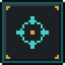

Fabric · Minecraft 1.21.11
QUICKCLIENT
40+ built-in modules, a world map that remembers what you explored, waypoint beams from bedrock to the sky, a round minimap and a HUD you can arrange however you like.

QuickClient v1.0.2
For Minecraft 1.21.11 with Fabric Loader 0.18+ and Fabric API.
- Install Fabric for Minecraft 1.21.11 and put Fabric API in your
modsfolder. - Put the QuickClient
.jarinto the samemodsfolder. - Start the game - press
Kfor modules andMfor the world map.
Modules
News
Loading...